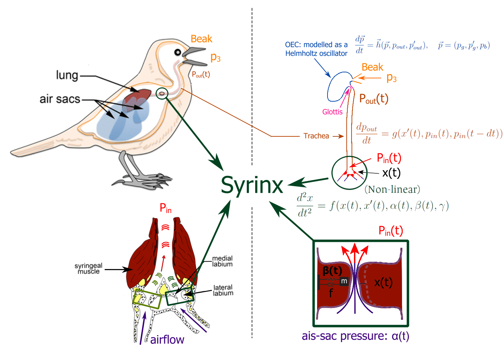
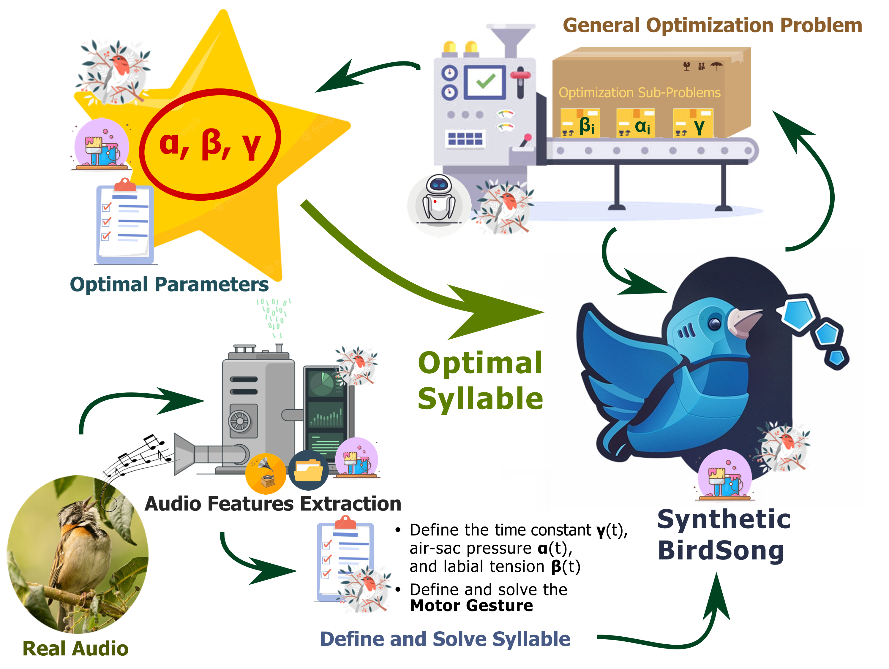

⚙️ Physical Model#
Important
This documentation is under construction.
Detailed description of the physical model and numerical solution of the pacakge.
{kind=link}
Syrinx#
Modeled as a nonlinear ha
Here, is the air-sac pressure and is the labial tension.
Trache#
Modeled as a tube with one end open, the one coneecting with the syrinx, and the other closed, the one connected to the OEC.
{cite:p}``
Oropharingeal- Esophageal Cavity (OEC)#
Modeled as a Helmholtz resonator.
Minimization Problem#
Numerial Solution#
{kind=link}
References#
Rodrigo Laje, Timothy J. Gardner, and Gabriel B. Mindlin. Neuromuscular control of vocalizations in birdsong: a model. Phys. Rev. E, 65:051921, May 2002. URL: https://link.aps.org/doi/10.1103/PhysRevE.65.051921, doi:10.1103/PhysRevE.65.051921.
Franz Goller and Roderick A. Suthers. Role of syringeal muscles in controlling the phonology of bird song. https://doi.org/10.1152/jn.1996.76.1.287, 76:287–300, 1996. URL: https://journals.physiology.org/doi/10.1152/jn.1996.76.1.287, doi:10.1152/JN.1996.76.1.287.
Ole Næsbye Larsen and Franz Goller. Direct observation of syringeal muscle function in songbirds and a parrot. Journal of Experimental Biology, 205:25–35, 1 2002. URL: https://journals.biologists.com/jeb/article/205/1/25/33066/Direct-observation-of-syringeal-muscle-function-in, doi:10.1242/JEB.205.1.25.
Gabriel B. Mindlin & Daniel Margoliash Ana Amador, Yonatan Sanz Perl. Elemental gesture dynamics are encoded by song premotor cortical neurons. Nature, 495(7439):59–64, Mar 2013. URL: https://doi.org/10.1038/nature11967, doi:10.1038/nature11967.
Tim Gardner, G. Cecchi, M. Magnasco, R. Laje, and Gabriel B. Mindlin. Simple motor gestures for birdsongs. Physical Review Letters, 87:208101, 10 2001. URL: https://journals.aps.org/prl/abstract/10.1103/PhysRevLett.87.208101, doi:10.1103/PhysRevLett.87.208101.
Yonatan Sanz Perl, Ezequiel M. Arneodo, Ana Amador, Franz Goller, and Gabriel B. Mindlin. Reconstruction of physiological instructions from zebra finch song. Physical Review E - Statistical, Nonlinear, and Soft Matter Physics, 84:051909, 11 2011. URL: https://journals.aps.org/pre/abstract/10.1103/PhysRevE.84.051909, doi:10.1103/PHYSREVE.84.051909/FIGURES/8/MEDIUM.
Neville H. Fletcher, Tobias Riede, and Roderick A. Suthers. Model for vocalization by a bird with distensible vocal cavity and open beak. The Journal of the Acoustical Society of America, 119:1005, 1 2006. URL: https://asa.scitation.org/doi/abs/10.1121/1.2159434, doi:10.1121/1.2159434.